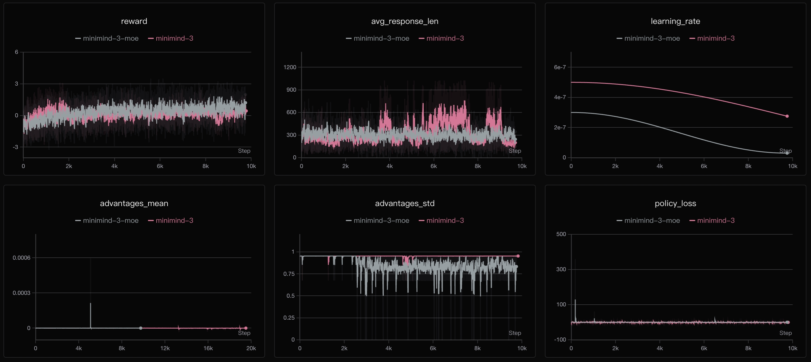
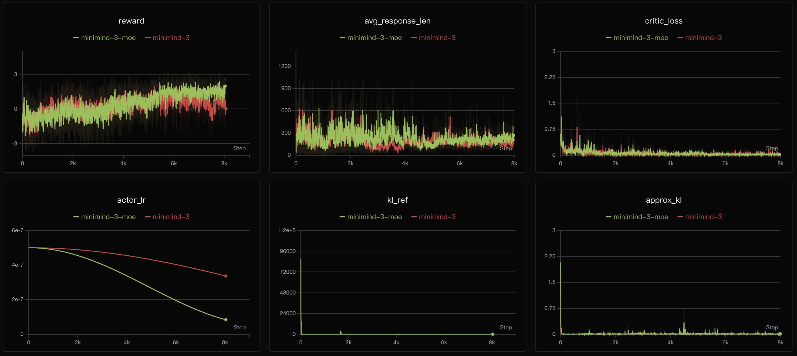

第 14 章 · 训练
强化学习 GRPO / PPO / CISPO
DPO 只能被动地学现成数据。强化学习则让模型自己生成、自己评分、自己改进。MiniMind 把 DPO、PPO、GRPO、CISPO 统一成一个公式：策略项 × 优势项 × 正则项。
1. 一个公式看穿所有 PO 算法
J = E[ Φ(r_t, A_t) ] − β · KL(π ‖ π_ref)
└── 策略项 ──┘ └── 正则项 ──┘
↑
优势项 A_t：这一步比平均好多少| 算法 | 策略项 Φ | 优势 A_t | 模型数 |
|---|---|---|---|
| DPO | log r_w − log r_l | 隐式 | 1（2 次前向） |
| PPO | min(r·A, clip(r)·A) | Critic / GAE | 2（actor+critic） |
| GRPO | min(r·A, clip(r)·A) | (R−μ)/σ | 1 |
| CISPO | clip(r)·A·logπ | (R−μ)/σ | 1 |
2. 动画：GRPO 怎么从一组回答里算出优势
GRPO 最巧妙的地方：不需要 Critic。对同一个问题采样一组回答，用组内奖励的均值/标准差做归一化， 就得到了优势。
动画组内归一化 → 优势
🔑 为什么要除以标准差
A = (R − μ) / σ。如果一组回答分数都很接近（σ 很小），说明这道题太简单或太难，
梯度会被放大而变得不稳定——这也叫“退化组”问题。归一化让优势始终在可比较的尺度上。
3. 动画：PPO 的 clip 到底裁了什么
概率比 r = π_new/π_old 表示“新策略比旧策略更倾向这个动作多少倍”。
如果更新太猛（r 偏离 1 太远），clip 会把梯度“掐断”，防止策略崩掉。
交互动画PPO 裁剪目标


✅ 动手提示
Notebook 里先带你练 torch.distributions.Categorical 采样、
log_prob、用 gather 取对应动作的 log 概率、
torch.clamp，再留白让你实现 grpo_loss。
注意：计算 r = exp(logπ_new − logπ_old) 时要 detach 掉分母，
否则梯度会走错方向。